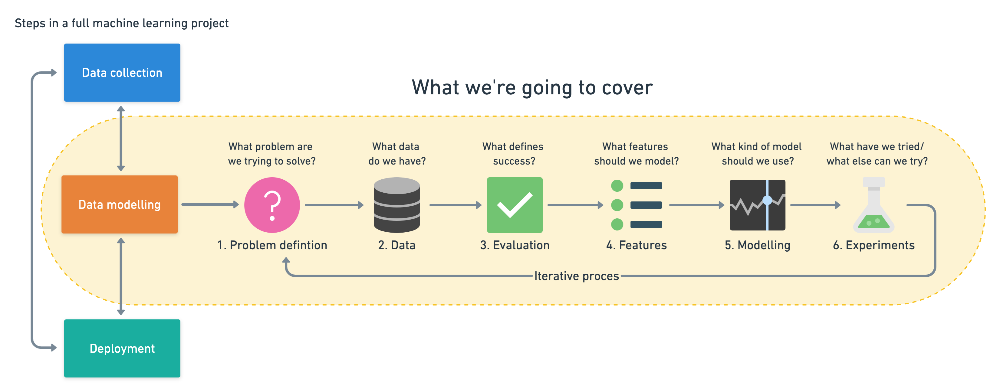
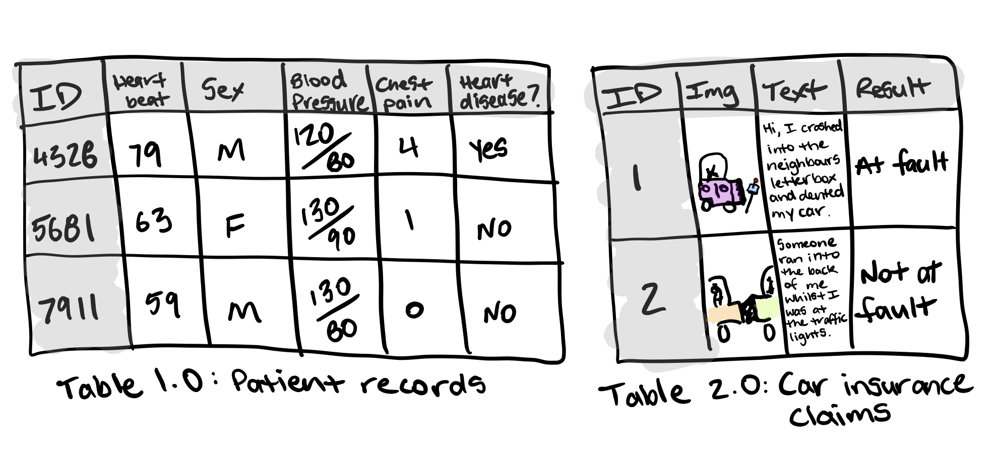
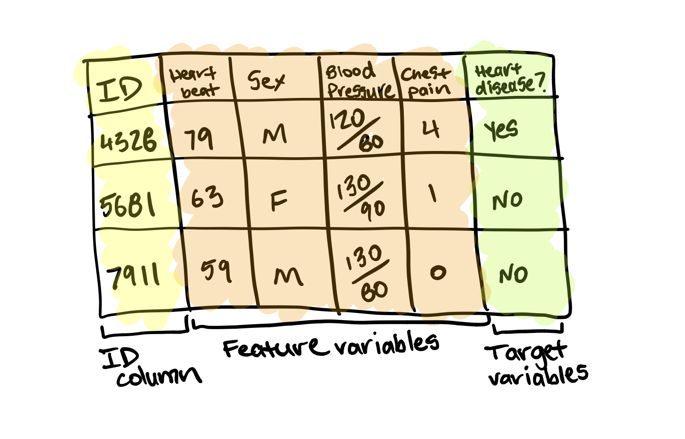
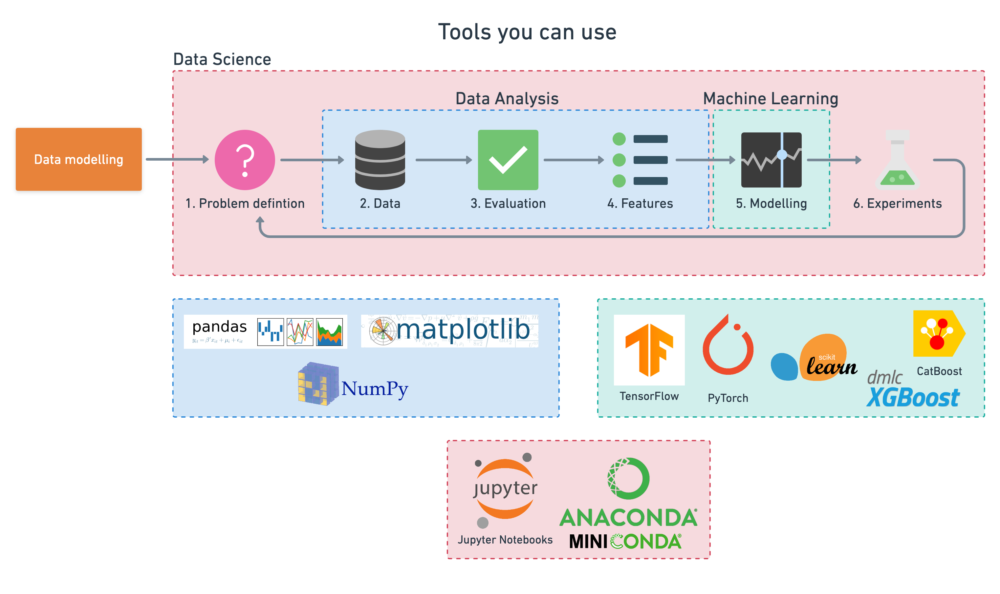

A 6 Step Framework for Approaching Machine Learning Projects
Machine learning is broad. The media makes it sound like magic. Reading this article will change that. It will give you an overview of the most common types of problems machine learning can be used for. And at the same time give you a framework to approach your future machine learning proof of concept projects.
First, we’ll clear up some definitions.
How is machine learning, artificial intelligence and data science different?
These three topics can be hard to understand because there are no formal definitions. Even after being a machine learning engineer for over a year, I don’t have a good answer to this question. I’d be suspicious of anyone who claims they do.
To avoid confusion, we’ll keep it simple. For this article, you can consider machine learning the process of finding patterns in data to understand something more or to predict some kind of future event.
The following steps have a bias towards building something and seeing how it works. Learning by doing.
6 steps for your next machine learning project
A machine learning pipeline can be broken down into three major steps. Data collection, data modelling and deployment. All influence one another.
You may start a project by collecting data, model it, realise the data you collected was poor, go back to collecting data, model it again, find a good model, deploy it, find it doesn’t work, make another model, deploy it, find it doesn’t work again, go back to data collection. It’s a cycle.
Wait, what does model mean? What’s does deploy mean? How do I collect data?
Great questions.
How you collect data will depend on your problem. We will look at examples in a minute. But one way could be your customer purchases in a spreadsheet.
Modelling refers to using a machine learning algorithm to find insights within your collected data.
What’s the difference between a normal algorithm and a machine learning algorithm?
Like a cooking recipe for your favourite chicken dish, a normal algorithm is a set of instructions on how to turn a set of ingredients into that honey mustard masterpiece.
What makes a machine learning algorithm different is instead of having the set of instructions, you start with the ingredients and the final dish ready to go. The machine learning algorithm then looks at the ingredients and the final dish and works out the set of instructions.
There are many different types of machine learning algorithms and some perform better than others on different problems. But the premise remains, they all have the goal of finding patterns or sets of instructions in data.
Deployment is taking your set of instructions and using it in an application. This application could be anything from recommending products to customers on your online store to a hospital trying to better predict disease presence.
The specifics of these steps will be different for each project. But the principles within each remain similar.
This article focuses on data modelling. It assumes you have already collected data, and are looking to build a machine learning proof of concept with it. Let’s break down how you might approach it.
|  |
|---|
| Machine learning projects can be broken into three steps, data collection, data modelling and deployment. This article focuses on steps within the data modelling phase and assumes you already have data. Full version on Whimsical. |
- Problem definition — What business problem are we trying to solve? How can it be phrased as a machine learning problem?
- Data — If machine learning is getting insights out of data, what data we have? How does it match the problem definition? Is our data structured or unstructured? Static or streaming?
- Evaluation — What defines success? Is a 95% accurate machine learning model good enough?
- Features — What parts of our data are we going to use for our model? How can what we already know influence this?
- Modelling — Which model should you choose? How can you improve it? How do you compare it with other models?
- Experimentation — What else could we try? Does our deployed model do as we expected? How do the other steps change based on what we’ve found?
Let’s dive a little deeper in each.
1. Problem definition — Rephrase your business problem as a machine learning problem
To help decide whether or not your business could use machine learning, the first step is to match the business problem you’re trying to solve a machine learning problem.
The four major types of machine learning are supervised learning, unsupervised learning, transfer learning and reinforcement learning (there’s semi-supervised as well but I’ve left it out for brevity). The three most used in business applications are supervised learning, unsupervised learning and transfer learning.
Supervised learning
Supervised learning, is called supervised because you have data and labels. A machine learning algorithm tries to learn what patterns in the data lead to the labels. The supervised part happens during training. If the algorithm guesses a wrong label, it tries to correct itself.
For example, if you were trying to predict heart disease in a new patient. You may have the anonymised medical records of 100 patients as the data and whether or not they had heart disease as the label.
A machine learning algorithm could look at the medical records (inputs) and whether or not a patient had heart disease (outputs) and then figure out what patterns in the medical records lead to heart disease.
Once you’ve got a trained algorithm, you could pass through the medical records (input) of a new patient through it and get a prediction of whether or not they have heart disease (output). It’s important to remember this prediction isn’t certain. It comes back as a probability.
The algorithm says, “based on what I’ve seen before, it looks like this new patients medical records are 70% aligned to those who have heart disease.”
Unsupervised learning
Unsupervised learning is when you have data but no labels. The data could be the purchase history of your online video game store customers. Using this data, you may want to group similar customers together so you can offer them specialised deals. You could use a machine learning algorithm to group your customers by purchase history.
After inspecting the groups, you provide the labels. There may be a group interested in computer games, another group who prefer console games and another which only buy discounted older games. This is called clustering.
What’s important to remember here is the algorithm did not provide these labels. It found the patterns between similar customers and using your domain knowledge, you provided the labels.
Transfer learning
Transfer learning is when you take the information an existing machine learning model has learned and adjust it to your own problem.
Training a machine learning model from scratch can be expensive and time-consuming. The good news is, you don’t always have to. When machine learning algorithms find patterns in one kind of data, these patterns can be used in another type of data.
Let’s say you’re a car insurance company and wanted to build a text classification model to classify whether or not someone submitting an insurance claim for a car accident is at fault (caused the accident) or not at fault (didn’t cause the accident).
You could start with an existing text model, one which has read all of Wikipedia and has remembered all the patterns between different words, such as, which word is more likely to come next after another. Then using your car insurance claims (data) along with their outcomes (labels), you could tweak the existing text model to your own problem.
If machine learning can be used in your business, it’s likely it’ll fall under one of these three types of learning. But let’s break them down further into classification, regression and recommendation.
- Classification — Do you want to predict whether something is one thing or another? Such as whether a customer will churn or not churn? Or whether a patient has heart disease or not? Note, there can be more than two things. Two classes is called binary classification, more than two classes is called multi-class classification. Multi-label is when an item can belong to more than one class.
- Regression — Do you want to predict a specific number of something? Such as how much a house will sell for? Or how many customers will visit your site next month?
- Recommendation — Do you want to recommend something to someone? Such as products to buy based on their previous purchases? Or articles to read based on their reading history?
Now you know these things, your next step is to define your business problem in machine learning terms.
Let’s use the car insurance example from before. You receive thousands of claims per day which your staff read and decide whether or not the person sending in the claim is at fault or not.
But now the number of claims are starting to come in faster than your staff can handle them. You’ve got thousands of examples of past claims which are labelled at fault or not at fault.
Can machine learning help?
You already know the answer. But let’s see. Does this problem fit into any of the three above? Classification, regression or recommendation?
Let’s rephrase it.
We’re a car insurance company who want to classify incoming car insurance claims into at fault or not at fault.
See the keyword? Classify.
It turns out, this could potentially be a machine learning classification problem. I say potentially because there’s a chance it might not work.
When it comes to defining your business problem as a machine learning problem, start simple, more than one sentence is too much. Add complexity when required.
2. Data — If machine learning is getting insights out of data, what data do you have?
The data you have or need to collect will depend on the problem you want to solve.
If you already have data, it’s likely it will be in one of two forms. Structured or unstructured. Within each of these, you have static or streaming data.
- Structured data — Think a table of rows and columns, an Excel spreadsheet of customer transactions, a database of patient records. Columns can be numerical, such as average heart rate, categorical, such as sex, or ordinal, such as chest pain intensity.
- Unstructured data — Anything not immediately able to be put into row and column format, images, audio files, natural language text.
- Static data — Existing historical data which is unlikely to change. Your companies customer purchase history is a good example.
- Streaming data — Data which is constantly updated, older records may be changed, newer records are constantly being added.
There are overlaps.
Your static structured table of information may have columns which contain natural language text and photos and be updated constantly.
For predicting heart disease, one column may be sex, another average heart rate, another average blood pressure, another chest pain intensity.
For the insurance claim example, one column may be the text a customer has sent in for the claim, another may be the image they’ve sent in along with the text and a final a column being the outcome of the claim. This table gets updated with new claims or altered results of old claims daily.
|  |
|---|
| Two examples of structured data with different kinds of data within it. Table 1.0 has numerical and categorical data. Table 2.0 has unstructured data with images and natural language text but is presented in a structured manner. |
The principle remains. You want to use the data you have to gains insights or predict something.
For supervised learning, this involves using the feature variable(s) to predict the target variable(s). A feature variable for predicting heart disease could be sex with the target variable being whether or not the patient has heart disease.
|  |
|---|
| Table 1.0 broken into ID column (yellow, not used for building machine learning model), feature variables (orange) and target variables (green). A machine learning model finds the patterns in the feature variables and predicts the target variables. |
For unsupervised learning, you won’t have labels. But you’ll still want to find patterns. Meaning, grouping together similar samples and finding samples which are outliers.
For transfer learning, your problem stays a supervised learning problem, except you’re leveraging the patterns machine learning algorithms have learned from other data sources separate from your own.
Remember, if you’re using a customers data to improve your business or to offer them a better service, it’s important to let them know. This is why you see “this site uses cookies” popups everywhere. The website uses how you browse the site, likely along with some kind of machine learning to improve their offering.
3. Evaluation — What defines success? Is a 95% accurate machine learning model good enough?
You’ve defined your business problem in machine learning terms and you have data. Now define what defines success. There are different evaluation metrics for classification, regression and recommendation problems. Which one you choose will depend on your goal.
For this project to be successful, the model needs to be over 95% accurate at whether someone is at fault or not at fault.
A 95% accurate model may sound pretty good for predicting who’s at fault in an insurance claim. But for predicting heart disease, you’ll likely want better results.
Other things you should take into consideration for classification problems.
- False negatives — Model predicts negative, actually positive. In some cases, like email spam prediction, false negatives aren’t too much to worry about. But if a self-driving cars computer vision system predicts no pedestrian when there was one, this is not good.
- False positives — Model predicts positive, actually negative. Predicting someone has heart disease when they don’t, might seem okay. Better to be safe right? Not if it negatively affects the person’s lifestyle or sets them on a treatment plan they don’t need.
- True negatives — Model predicts negative, actually negative. This is good.
- True positives — Model predicts positive, actually positive. This is good.
- Precision — What proportion of positive predictions were actually correct? A model that produces no false positives has a precision of 1.0.
- Recall — What proportion of actual positives were predicted correctly? A model that produces no false negatives has a recall of 1.0.
- F1 score — A combination of precision and recall. The closer to 1.0, the better.
- Receiver operating characteristic (ROC) curve & Area under the curve (AUC) — The ROC curve is a plot comparing true positive and false positive rate. The AUC metric is the area under the ROC curve. A model whose predictions are 100% wrong has an AUC of 0.0, one whose predictions are 100% right has an AUC of 1.0.
For regression problems (where you want to predict a number), you’ll want to minimise the difference between what your model predicts and what the actual value is. If you’re trying to predict the price a house will sell for, you’ll want your model to get as close as possible to the actual price. To do this, use MAE or RMSE.
- Mean absolute error (MAE) — The average difference between your model's predictions and the actual numbers.
- Root mean square error (RMSE) — The square root of the average of squared differences between your model's predictions and the actual numbers.
Use RMSE if you want large errors to be more significant. Such as, predicting a house to be sold at $300,000 instead of $200,000 and being off by $100,000 is more than twice as bad as being off by $50,000. Or MAE if being off by $100,000 is twice as bad as being off by $50,000.
Recommendation problems are harder to test in experimentation. One way to do so is to take a portion of your data and hide it away. When your model is built, use it to predict recommendations for the hidden data and see how it lines up.
Let’s say you’re trying to recommend customers products on your online store. You have historical purchase data from 2010–2019. You could build a model on the 2010–2018 data and then use it to predict 2019 purchases. Then it becomes a classification problem because you’re trying to classify whether or not someone is likely to buy an item.
However, traditional classification metrics aren’t the best for recommendation problems. Precision and recall have no concept of ordering.
If your machine learning model returned back a list of 10 recommendations to be displayed to a customer on your website, you’d want the best ones to be displayed first right?
- Precision @ k (precision up to k) — Same as regular precision, however, you choose the cutoff, k. For example, precision at 5, means we only care about the top 5 recommendations. You may have 10,000 products. But you can’t recommend them all to your customers.
To begin with, you may not have an exact figure for each of these. But knowing what metrics you should be paying attention to gives you an idea of how to evaluate your machine learning project.
4. Features — What features does your data have and which can you use to build your model?
Not all data is the same. And when you hear someone referring to features, they’re referring to different kinds of data within data.
The three main types of features are categorical, continuous (or numerical) and derived.
-
Categorical features — One or the other(s). For example, in our heart disease problem, the sex of the patient. Or for an online store, whether or not someone has made a purchase or not.
-
Continuous (or numerical) features — A numerical value such as average heart rate or the number of times logged in. Derived features — Features you create from the data. Often referred to as feature engineering. Feature engineering is how a subject matter expert takes their knowledge and encodes it into the data. You might combine the number of times logged in with timestamps to make a feature called time since last login. Or turn dates from numbers into “is a weekday (yes)” and “is a weekday (no)”.
Text, images and almost anything you can imagine can also be a feature. Regardless, they all get turned into numbers before a machine learning algorithm can model them.
Some important things to remember when it comes to features.
- Keep them the same during experimentation (training) and production (testing) — A machine learning model should be trained on features which represent as close as possible to what it will be used for in a real system.
- Work with subject matter experts — What do you already know about the problem, how can that influence what features you use? Let your machine learning engineers and data scientists know this.
- Are they worth it? — If only 10% of your samples have a feature, is it worth incorporating it in a model? Have a preference for features with the most coverage. The ones where lots of samples have data for.
- Perfect equals broken — If your model is achieving perfect performance, you’ve likely got feature leakage somewhere. Which means the data your model has trained on is being used to test it. No model is perfect.
You can use features to create a simple baseline metric. A subject matter expert on customer churn may know someone is 80% likely to cancel their membership after 3 weeks of not logging in.
Or a real estate agent who knows the sale prices of houses might know houses with over 5 bedrooms and 4 bathrooms sell for over $500,000.
These are simplified and don’t have to be exact. But it’s what you’re going to use to see whether machine learning can improve upon or not.
5. Modelling — Which model should you choose? How can you improve it? How do you compare it with other models?
Once you’ve defined your problem, prepared your data, evaluation criteria and features it’s time to model.
Modelling breaks into three parts, choosing a model, improving a model, comparing it with others.
Choosing a model
When choosing a model, you’ll want to take into consideration, interpretability and ease to debug, amount of data, training and prediction limitations.
- Interpretability and ease to debug — Why did a model make a decision it made? How can the errors be fixed?
- Amount of data — How much data do you have? Will this change?
- Training and prediction limitations — This ties in with the above, how much time and resources do you have for training and prediction?
To address these, start simple. A state of the art model can be tempting to reach for. But if it requires 10x the compute resources to train and prediction times are 5x longer for a 2% boost in your evaluation metric, it might not be the best choice.
Linear models such as logistic regression are usually easier to interpret, are very fast for training and predict faster than deeper models such as neural networks.
But it’s likely your data is from the real world. Data from the real world isn’t always linear.
What then?
Ensembles of decision trees and gradient boosted algorithms (fancy words, definitions not important for now) usually work best on structured data, like Excel tables and dataframes. Look into random forests, XGBoost and CatBoost.
|  |
|---|
| A non-exhaustive example of all the different tools you can use for machine learning/data science. |
Deep models such as neural networks generally work best on unstructured data like images, audio files and natural language text. However, the trade-off is they usually take longer to train, are harder to debug and prediction time takes longer. But this doesn’t mean you shouldn’t use them.
Transfer learning is an approach which takes advantage of deep models and linear models. It involves taking a pre-trained deep model and using the patterns it has learned as the inputs to your linear model. This saves dramatically on training time and allows you to experiment faster.
Where do I find pre-trained models?
Pre-trained models are available on PyTorch hub, TensorFlow hub, model zoo and within the fast.ai framework. This is a good place to look first for building any kind of proof of concept.
What about the other kinds of models?
For building a proof of concept, it’s unlikely you’ll have to ever build your own machine learning model. People have already written code for these.
What you’ll be focused on is preparing your inputs and outputs in a way they can be used with an existing model. This means having your data and labels strictly defined and understanding what problem you’re trying to solve.
Tuning and improving a model
A model's first results isn’t its last. Like tuning a car, machine learning models can be tuned to improve performance.
Tuning a model involves changing hyperparameters such as learning rate or optimizer. Or model-specific architecture factors such as number of trees for random forests and number of and type of layers for neural networks.
These used to be something a practitioner would have to tune by hand but are increasingly becoming automated. And should be wherever possible.
Using a pre-trained model through transfer learning often has the added benefit of all of these steps been done.
The priority for tuning and improving models should be reproducibility and efficiency. Someone should be able to reproduce the steps you’ve taken to improve performance. And because your main bottleneck will be model training time, not new ideas to improve, your efforts should be dedicated towards efficiency.
Comparing models
Compare apples to apples.
- Model 1, trained on data X, evaluated on data Y.
- Model 2, trained on data X, evaluated on data Y.
Where model 1 and 2 can vary but not data X or data Y.
6. Experimentation — What else could we try? How do the other steps change based on what we’ve found? Does our deployed model do as we expected?
This step involves all the other steps. Because machine learning is a highly iterative process, you’ll want to make sure your experiments are actionable.
Your biggest goal should be minimising the time between offline experiments and online experiments.
Offline experiments are steps you take when your project isn’t customer-facing yet. Online experiments happen when your machine learning model is in production.
All experiments should be conducted on different portions of your data.
- Training data set — Use this set for model training, 70–80% of your data is the standard.
- Validation/development data set — Use this set for model tuning, 10–15% of your data is the standard.
- Test data set — Use this set for model testing and comparison, 10–15% of your data is the standard.
These amounts can fluctuate slightly, depending on your problem and the data you have.
Poor performance on training data means the model hasn’t learned properly. Try a different model, improve the existing one, collect more data, collect better data.
Poor performance on test data means your model doesn’t generalise well. Your model may be overfitting the training data. Use a simpler model or collect more data.
Poor performance once deployed (in the real world) means there’s a difference in what you trained and tested your model on and what is actually happening. Revisit step 1 & 2. Ensure your data matches up with the problem you’re trying to solve.
When you implement a large experimental change, document what and why. Remember, like model tuning, someone, including your future self, should be able to reproduce what you’ve done.
This means saving updated models and updated datasets regularly.
Putting it together in a proof of concept
Many businesses have heard of machine learning but aren’t sure where to start. One of the best places to start is to use the six steps above to build a proof of concept.
A proof of concept should not be seen as something to fundamentally change how your business operates but as an exploration into whether machine learning can bring your business value.
After all, you’re not after fancy solutions to keep up with the hype. You’re after solutions which add value.
Put a timeline on a proof of concept, 2, 6 and 12 weeks are good amounts. With good data, a good machine learning and data science practitioner can get 80–90% of the final modelling results in a relatively small timeframe.
Have your subject matter experts and machine learning engineers and data scientists work together. There is nothing worse than a machine learning engineer building a great model which models the wrong thing.
If a web designer could improve the layout of an online store to help a machine learning experiment, they should know.
Remember, due to the nature of proof of concepts, it may turn out machine learning isn’t something your business can take advantage of (unlikely). As a project manager, ensure you’re aware of this. If you are a machine learning engineer or data scientist, be willing to accept your conclusions lead nowhere.
But all is not lost.
The value in something not working is now you know what doesn’t work and can direct your efforts elsewhere. This is why setting a timeframe for experiments is helpful. There is never enough time but deadlines work wonders.
If a machine learning proof of concept turns out well, take another step, if not, step back. Learning by doing is a faster process than thinking about something.
Things this article has missed
Each of these steps could deserve an article on their own. I’ll work on it.
In the meantime, there are some things to note.
It’s always about the data. Without good data to begin with, no machine learning model will help you. If you want to use machine learning in your business, it starts with good data collection.
Deployment changes everything. A good model offline doesn’t always mean a good model online. This article has focused on data modelling. Once you deploy a model, there’s infrastructure management, data verification, model retraining, analysis and more. Any cloud provider has services for these but putting them together is still a bit of a dark art. Pay your data engineers well. If you’re data engineer, share what you know.
Data collection and model deployment are the longest parts of a machine learning pipeline. This article has only focused on modelling. And even then, it misses specifics on how to get your data ready to be modelled (other sections in this repo cover that).
Tools of the trade vary. Machine learning is big tool comprised of many other tools. From code libraries and frameworks to different deployment architectures. There’s usually several different ways to do the same thing. Best practice is continually being changed. This article focuses on things which don’t.